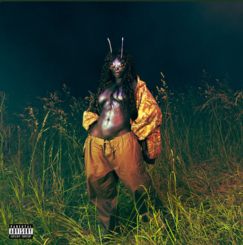
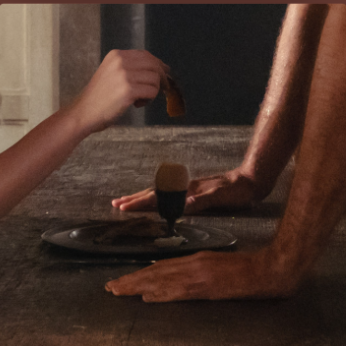
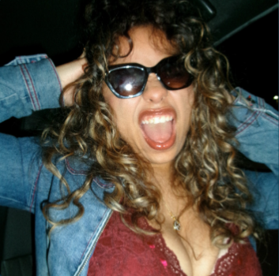

My most listened to songs of my second semester of college were “Take You Down” - SZA, “Chains of Love” - Charlie XCX, “Butterflies” - Brent Faiyaz, and “iloveitiloveitiloveit” - Bella Kay.
My second semester had this mix of intensity, softness, and self‑discovery. “Take You Down” and “Butterflies” hint at me being deep in my feelings, craving connection and closeness, maybe even navigating a situationship that felt both exciting and complicated. “Chains of Love” brings in that chaotic, dramatic, almost addictive energy, like I was pulled toward things that felt powerful even when they weren’t simple. And “iloveitiloveitiloveit” adds that youthful, impulsive, heart‑racing vibe, the kind of song you play when you’re in the middle of something you know you’ll look back on as a core memory.
Altogether, my most‑played songs say that my semester was emotional, intense, a little messy, and full of moments that made me feel alive. I was figuring myself out through relationships, friendships, and the kind of late‑night thoughts that only happen during freshman year.
